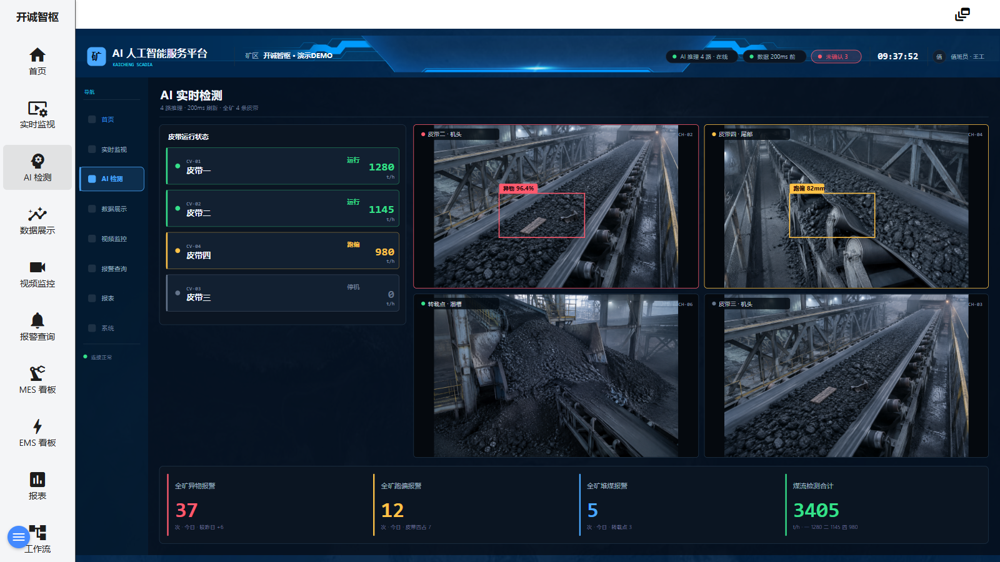

AI 检测画面是矿区演示工程的核心值守画面，标题为「AI 实时检测」，副标题标注能力「4 路推理 · 200ms 刷新 · 全矿 4 条皮带」。画面集成了皮带运行状态、4 路 AI 视频分析（异物、跑偏等识别结果直接叠加在视频上）以及底部四张全矿级统计卡，是一屏掌握 AI 检测全貌的驾驶舱。

图 3-1 AI 检测画面（当前交付版实际截图）
| 区域 | 说明 |
|---|---|
| ① 画面标题栏 | 同第 1 章③：左侧「AI 人工智能服务平台」与矿区徽章，右侧「AI 推理 4 路 · 在线」「数据 200ms 前」「未确认 3」、实时时钟、「值班员 · 王工」。 |
| ② 画面标题 | 主区顶部居中显示「AI 实时检测」与副标题「4 路推理 · 200ms 刷新 · 全矿 4 条皮带」。 |
| ③ 皮带运行状态（左侧栏） | 4 条皮带的运行卡片，每张含皮带编号（CV-01～CV-04）、名称、状态与瞬时煤流量： · CV-01 皮带一 —— 运行 —— 1280 t/h · CV-02 皮带二 —— 运行 —— 1145 t/h · CV-03 皮带三 —— 停机 —— 0 t/h · CV-04 皮带四 —— 跑偏 —— 980 t/h |
| ④ 4 路视频区（中部） | 四路摄像机画面，每路标注点位与通道号：皮带二 · 机头（CH-02）、皮带四 · 尾部（CH-04）、转载点 · 溜槽（CH-06）、皮带三 · 机头（CH-03）。画面上实时叠加 AI 识别结果，如「异物 96.4%」（置信度）、「跑偏 82mm」（偏移量）。 |
| ⑤ 全矿统计卡（底部） | 四张统计卡： · 全矿异物报警：37 次 · 今日 · 较昨日 +6 · 全矿跑偏报警：12 次 · 今日 · 皮带四占 7 · 全矿堆煤报警：5 次 · 今日 · 转载点 3 · 煤流检测合计：3405 t/h · 一 1280 二 1145 四 980 |
| ⑥ 画面内导航 | 画面左侧绘制的导航（首页/实时监视/AI 检测/数据展示/视频监控/报警查询/报表/系统），前 6 项可点击切换画面。 |